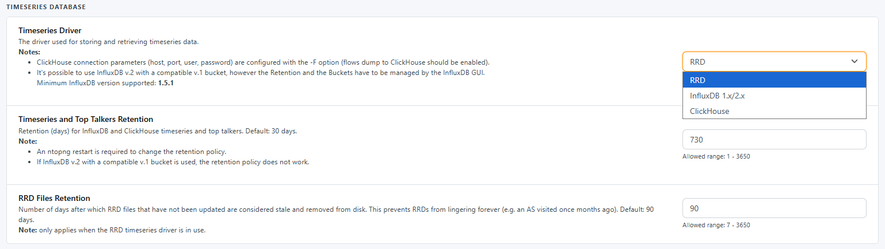
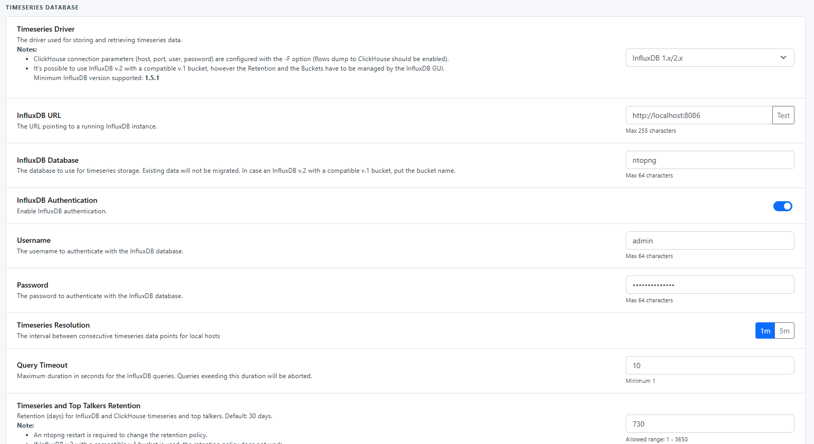
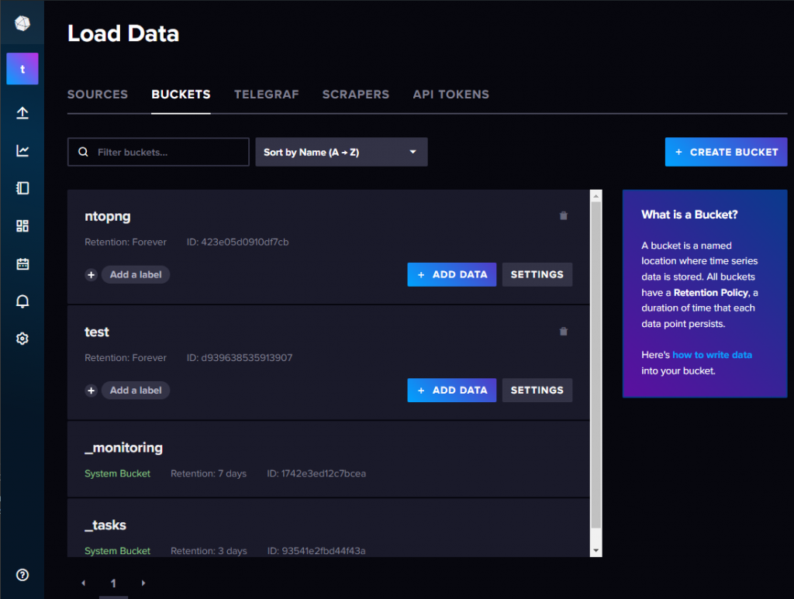
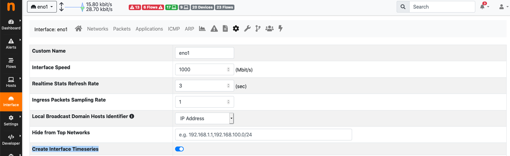

Таймсерии
Ntopng создает исторические временные ряды для отображения на графиках. Для того, чтобы хранить данные таймсерий, ntopng поддерживает RRD, InfluxDB и ClickHouse как драйверы таймсерий.
Примечание
Чтобы получить доступ к этим настройкам, перейдите к Настройки -> Предпочтения -> Таймсерии

Настройки таймсерий
Разрешение данных зависит от фактического типа таймсерии. Например, Трафик сетевых интерфейсов обычно записывается с разрешением в 1 секунду, тогда как Данные протоколов хостов L7 обычно имеют разрешение 5 минут. Более того, в тех же случаях (например, RRD) разрешение данных зависит от возраста данных.
RRD Водитель
RRD — используемый драйвер по умолчанию. Он записывает данные в виде локальных .rrd файлы. RRD автоматически объединяет старые данные для экономии места, уменьшая их разрешение. Следовательно, более старые данные будут объединяются вместе и окончательно удаляются через 1 год (на самом деле RRD означает Круговая система База данных).
Запрос одной серии данных эффективен, поскольку данные содержатся в одном файле. при выполнении более сложных запросов к нескольким рядам данных (например, при попытке определить верхние протоколы) может занять некоторое время. Более того, RRD показал некоторые ограничения при написании. большой объем данных, что обычно приводит к пробелам в точках данных временных рядов. С большим объема данных рекомендуется использовать InfluxDB.
InfluxDB Водитель
ntopng поддерживает запись и получение данных таймсерий с сервера InfluxDB. Поскольку связь с базой данных происходит через сеть, сервер также может находиться на внешнем хосте.
Примечание
ntopng поддерживает InfluxDB версию 1.x (серия 2.x отсутствует), минимальная поддерживаемая версия — 1.5.1.

InfluxDB Настройки
Вот обзор функций, которые предоставляет ntopng:
База данных автоматически настраивается в соответствии с InfluxDB База данных значение поля
Можно указать учетные данные для аутентификации, если база данных InfluxDB защищена.
InfluxDB действительно подходит для экспорта высокочастотных данных из-за высокой вставки пропускная способность. По этой причине можно увеличить разрешение таймсерий до получить более подробные исторические данные. Это можно настроить из Предпочтение «L7 Разрешение приложения».
Предупреждение
Увеличение разрешения временных рядов требует большей буферизации в ntopng. Это окажет сильное влияние на использование RAM в крупных сетях.
Предупреждение
Чтобы избежать ошибок «превышено максимальное количество значений на тег» с InfluxDB, приводящих к новые данные отклоняются, необходимо установить максимальное значение на тег = 0 в InfluxDB файл конфигурации, обычно расположенный по адресу /etc/influxdb/influxdb.conf
Предупреждение
Чтобы избежать ошибок «превышено максимальное количество серий на базу данных» с InfluxDB, приводящих к новые данные отклоняются, необходимо установить максимальная серия на базу данных = 0 в InfluxDB файл конфигурации, обычно расположенный по адресу /etc/influxdb/influxdb.conf. Обратите внимание что высокая мощность таймсерий может привести к снижению производительности записи/чтения. Вы можете уменьшить мощность, отключив некоторые таймсерии и уменьшив максимальную мощность. временные ряды Хранение данных.
Примечание
Можно просмотреть текущий размер хранилища InfluxDB, используемый ntopng из Страница «Состояние выполнения».
Статус InfluxDB можно отслеживать с помощью InfluxDB Монитор.
Аутентификация
InfluxDB поддерживает аутентификацию HTTP/HTTPS. Чтобы включить аутентификацию HTTP/HTTPS, используйте переключатель настроек и укажите действительную пару имени пользователя и пароля.
Чтобы включить аутентификацию InfluxDB, выполните шаги, выделенные на https://github.com/influxdata/influxdb/issues/8824#issuecomment-329746475.
Примечание
ntopng создает политики хранения и непрерывные запросы. Для этого требуется пользователь InfludDB с правами администратора. Пользователи, не являющиеся администраторами, не могут создавать политики хранения (https://stackoverflow.com/a/45656074).
Таким образом, при первой настройке ntopng требуется пользователь-администратор для использования InfluxDB, чтобы разрешить создание политик хранения и непрерывных запросов. После создания базы данных ее может использовать непривилегированный пользователь.
Использование InfluxDB 2.x
Примечание
Поддержка InfluxDB 2.x лишь частичная: ntopng общается с ним через v1-совместимый REST API, который InfluxDB 2.x все еще предоставляет, а не через собственные конечные точки v2.
Несмотря на то, что ntopng изначально нацелен на InfluxDB 1.x, экземпляр InfluxDB 2.x может по-прежнему может использоваться в качестве бэкэнда таймсерий, поскольку InfluxDB 2.x сохраняет подмножество v1 REST API доступна для обратной совместимости. Чтобы его использовать, ведро должно создаваться и явно предоставляться через совместимые с v1 API и ntopng затем необходимо указать на него, как если бы он разговаривал с сервером InfluxDB 1.x.
Следующие шаги описывают, как это настроить.
Войдите в веб-интерфейс InfluxDB 2.x и создайте новую корзину, выделенную до ntopng (например, с именем
ntopng).

InfluxDB V.2 Создать сегмент
Включите совместимость v1 API для этого сегмента, выполнив следующую команду: команда из терминала с доступом к экземпляру InfluxDB 2.x:
influx v1 auth create --read-bucket BUCKET_ID --write-bucket BUCKET_ID \ --username USERNAME_FOR_NTOPNG --password PASSWORD_FOR_NTOPNG \ --org YOUR_ORGANIZATION --token REST_API_TOKEN_PROVIDED_BY_INFLUX
Где:
BUCKET_ID— это идентификатор только что созданного сегмента, как показано на рисунке InfluxDB Веб-интерфейс 2.x.USERNAME_FOR_NTOPNGиPASSWORD_FOR_NTOPNGявляются полномочиями ваш выбор, который будет введен позже в ntopng InfluxDB Настройки аутентификации.YOUR_ORGANIZATIONэто название организации, настроенное в InfluxDB 2.x (обычно тот, который выбирается при первом входе в систему).REST_API_TOKEN_PROVIDED_BY_INFLUX— это токен API, либо тот, отображается при первом входе в систему или создается из API Токенов раздел веб-интерфейс InfluxDB 2.x.
В ntopng перейдите к Настройки -> Предпочтения -> Таймсерии и настроить следующие поля:
Драйвер таймсерий: выбирать
InfluxDB 1.x.InfluxDB URL-адрес: URL-адрес InfluxDB 2.x REST API (по умолчанию
http://localhost:8086).InfluxDB База данных: имя сегмента, созданного для ntopng (например.
ntopng).Давать возможность InfluxDB Аутентификация.
Имя пользователя и Пароль: учетные данные, созданные с помощью
influx v1 auth createкоманда выше.
Как только эти настройки будут сохранены, ntopng начнет экспортировать данные в InfluxDB 2.х ведро.
Предупреждение
InfluxDB 2.x удалена поддержка RETENTION, CREATE и
DROP ключевые слова из REST API. Это означает, что в отличие от
InfluxDB 1.x, ntopng не могут управлять сохранением данных или удалять старые данные на
InfluxDB Серверная часть 2.x. Вместо этого необходимо настроить политики хранения и
управляется непосредственно из веб-интерфейса InfluxDB 2.x.
ClickHouse Водитель
Примечание
Для поддержки временных рядов ClickHouse требуется лицензия Enterprise M или выше и ClickHouse включено через файл конфигурации.
ntopng поддерживает запись и запрос данных временных рядов из ClickHouse сервер. ClickHouse — это база данных оптимизирована для аналитических запросов с высокой пропускной способностью, что делает ее хорошо подходящей для временных рядов рабочие нагрузки в масштабе.
В отличие от RRD (который использует локальные файлы для каждого объекта) ClickHouse хранит все данные таймсерий в одном централизованная таблица с гибким макетом карты тегов/метрик, что делает ее подходящей для третьих лиц интеграции, такие как Grafana. Это позволяет:
Высокая пропускная способность записи: данные буферизуются в памяти для каждого интерфейса и сбрасываются в ClickHouse в пакетном режиме, избегая узкого места ввода-вывода при записи каждого файла RRD.
Гибкое хранение: срок истечения срока действия данных контролируется одним параметром TTL; нет предопределенных циклические архивы.
Эффективные запросы Top-K: агрегирование по всем объектам (например, основным протоколам, основным хостам). запускаться как один SQL-запрос, а не сканировать множество отдельных файлов.
Поддержка кластеров и облаков: драйвер поддерживает автономные экземпляры, распределенные кластеры, и ClickHouse Облако.
Чтобы использовать ClickHouse в качестве драйвера таймсерии, установите для параметра драйвера таймсерии значение
clickhouse в пользовательском интерфейсе настроек ntopng или настройте -F вариант с ClickHouse
режим. Видеть ClickHouse Таймсерии для подробной конфигурации и архитектуры.
Grafana Панель управления
Когда ClickHouse включен в качестве серверной части временных рядов, ntopng предоставляет образец Grafana панель мониторинга, которую можно загрузить непосредственно со страницы ntopng «Настройки» в разделе Таймсерии раздел. Приборная панель предварительно настроена для подключения к тому же ClickHouse экземпляр, используемый ntopng, и включает панели для наиболее распространенных показателей трафика, таких как пропускная способность интерфейса, лучшие приложения и лучшие хосты.

Кнопка загрузки информационной панели Grafana появляется в настройках Timeseries, когда в качестве драйвера выбран ClickHouse.
Чтобы импортировать панель мониторинга в Grafana, загрузите файл JSON со страницы настроек и используйте Grafana Импорт функция (Панели мониторинга → Импорт → Загрузите файл JSON).
Примечание
Для приборной панели требуется grafana-clickhouse-источник данных плагин, который будет установлен в Grafana.
После установки настройте источник данных ClickHouse в Grafana, указывающий на тот же сервер. и базу данных, используемую ntopng, затем импортируйте загруженный файл JSON.
Конфигурация таймсерий
Отдельные временные ряды могут быть включены или отключены в зависимости от потребностей пользователя или системы. пределы. Обычно такие ограничения составляют:
размер хранилища (больше таймсерий означает больше места для хранения)
скорость хранения
время, необходимое для записи таких таймсерий в базу данных таймсерий (в частности, это проблема с RRD)
Более того, наличие большого количества временных рядов обычно означает более медленное время выполнения запроса.

Включение временной серии «Трафик» обычно мало влияет на производительность. На с другой стороны, включение «Приложений уровня 7» (в частности, для локальных хостов) имеет большое влияние, поскольку существует множество протоколов и необходимо обрабатывать временные ряды для каждого из них.
Можно пропустить генерацию таймсерии для конкретного сетевого интерфейса. со страницы настроек интерфейса. Отключив генерацию таймсерий в сети интерфейса, данные таймсерии не будут записаны для самого интерфейса и для все принадлежащие ему локальные хосты.

ntopng также предоставляет временные ряды для других элементов трафика, таких как автономные системы, Страны, VLAN и так далее, которые можно включить самостоятельно.

Таймсерии сетевой матрицы
Примечание
Network Matrix недоступна в версии для сообщества.
ntopng может хранить временные ряды для коммуникаций в локальных сетях, называемые сетевой матрицей.
Он представляет собой трафик между локальными сетями (можно добавить к ntopng с помощью -м в файле конфигурации), как отправленные, так и полученные.

Его можно найти на странице таймсерий сетей; чтобы перейти к нему, перейдите на вкладку «Сети» и затем щелкните значок диаграмм. Этот конкретный временной ряд отображается во всех предустановках времени, кроме последних 5 минут.